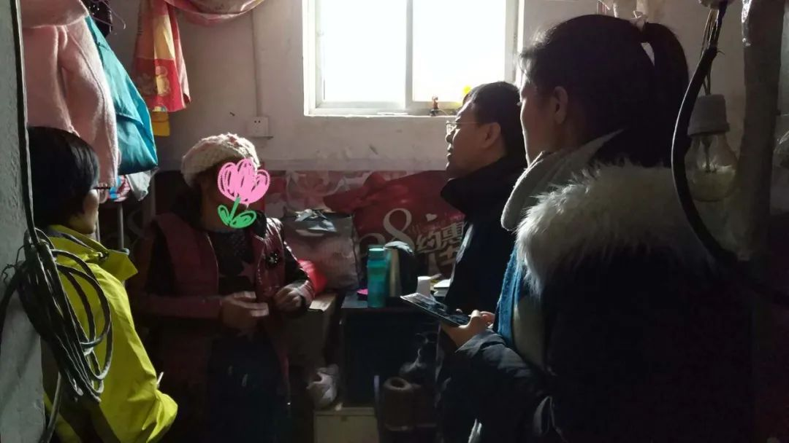
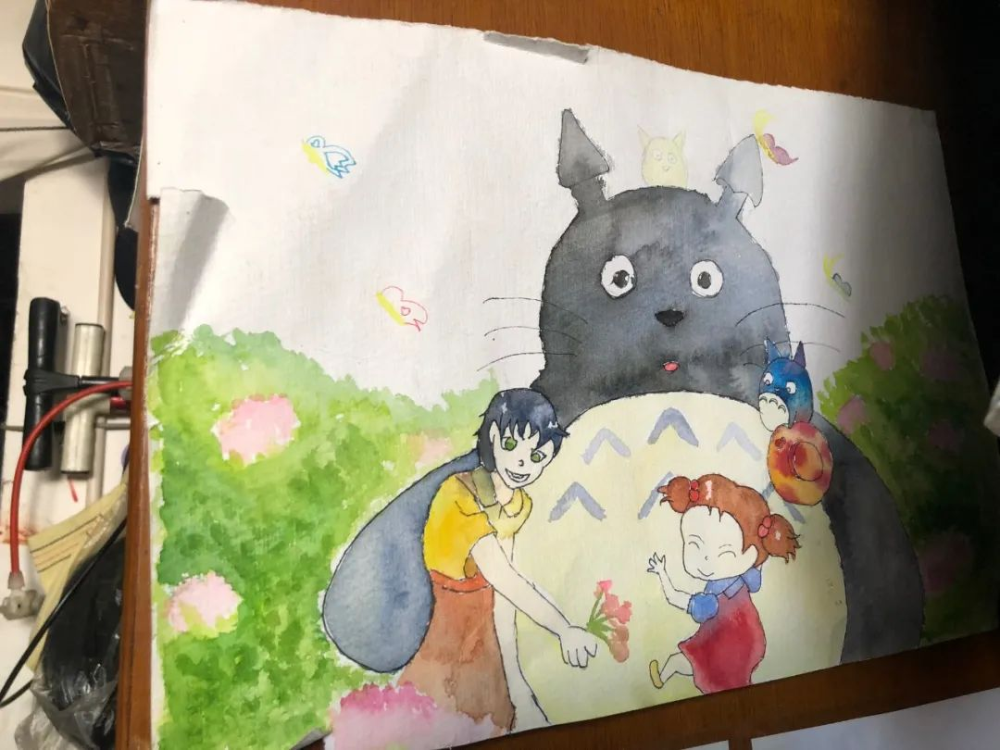

在人间丨父亲双肺感染严重，然而一床难求
原文链接 备份链接 我是一名在武汉工作的普通高校教师，爸妈也在武汉工作。在1月23日之前，我从没想过今年家里会遇到这样的灾难。这几天，是我人生三十余年最难熬的时间。本来应该欢喜迎春，却不料因为疫情的扩展，在武汉和老家湖北当阳相继封城后，我 …
想着过个安生的年
口述者：米粒（化名）
打工所在地：北京
编者注：米粒，52岁，原本在张家口农村老家跑摩的为生，丈夫遭遇交通事故导致胃底大出血而到北京手术，之后孩子也查出病毒性心肌炎和血小板无力症，一家人只能在北京边打工边求医。米粒常年扛着家庭重担，以捡垃圾和摆摊卖文具为生，自己也是疾病缠身。面对命运，她努力让自己学会接纳和感恩。
都是命呗，放过别人也是放过自己
2012年1月，我和孩子她爸第一次来北京，给他做胃底大出血手术。2012年5月，孩子得了病毒性心肌炎，我再次带她来北京看病。我们两人之前在老家是跑摩的。因病致贫，为了在北京给孩子看病能有收入生存下去，2013年开始断断续续摆地摊、捡垃圾为生。
家里收入我算不出来，很多记不住了。在老家办的低保户，每月发给我们家700元，政府每年给20斤大米，几桶麻油，过年还给200块钱的煤。孩子（领养的孤儿）有孤儿救助，还办了特困户，虽然不能定期发钱，但是能报销医院开的医药费单子，药店买的药无法报销。捡破烂也不是天天有，得攒几天才能卖20/30元钱。吃喝是从老家带的米面，基本不咋花钱。房租1千出头，屋里没有暖气，我们自己买的煤，偷偷点的炉子，孩子学费一学期3千多元。

▲ 2017年冬季，协作者社会工作者了解米粒家里的生活情况
2011年12月孩子他爸跑摩的的时候被三轮车给撞伤了，一开始他不觉得难受，拖了几天，后来吃饭也不怎么样了，牙齿鼻子还出血，大便也不好了。医生检查说是胃底大出血，挺危险的，住进医院人家就不让他动了，就开始输血，半夜病危通知书就下来了。2个学佛的佛友帮我带孩子，我拿着家里所有的存款带他来北京治病了，后来把房产证也抵押贷款。在北京协和医院输了两天液止住血了，医生建议是要做手术，我们又跑到302医院给他做手术，切除了一部分胃还有食道管。手术后孩子他爸就基本丧失了劳动能力。手术及治疗费花了11万，每天几千元的住院费，住了40天院。跑摩的攒的几万块钱都花光了，还借了5、6万。
我到现在也没有去找那个肇事者，那家人都不知道这个事。我到现在还是觉得让一家不好过，找了他们的话就是两家人不好过了，农村人十来万块钱让他赔偿他也拿不出。我就自己扛下来了，我想的是，也许她爸早就有病，但是一直没发现，然后被车撞了一下就引发大出血了，所以就想着自己的事自己承担吧。如果打官司的话，老公病着，孩子也病着，家里也没其他人，可能打到无休止了，还不如我自己发个善心，别再纠缠了呢。都是命呗，放过别人也是放过自己。我觉得我这么想也是对的，因为后来我们孩子看病也是有志愿者、有好人捐款啥的，社会好心人也多。
妈妈，回老家我就没命了
2012年3月开始，我的孩子连着两个月高烧不退，在老家医院检查说是因为感冒时间长了，感染了病毒性心肌炎。当时家里给他爸爸看病已经负债几万，没办法我又借了1000块钱，背着孩子再次来到北京。检查结果说是病毒性心肌炎，在儿童医院的心内科，住了一个礼拜，孩子老家学校的校长帮我们找了捐款方，捐赠了7千元帮我们度过难关。

▲ 米粒的孩子画的图画（拍摄于2019年8月）
后来孩子又检查出血小板无力症，2012到2013年一直是大伙儿给我们捐钱治病的，花了不少，但具体让我算我算不出来是多少钱了。后来医院说是要做骨髓移植才能根治，需要几十万元，数目太大就无能为力了，但我还是挺感恩人家帮助我们。骨髓配型后来也找到了，因为没有钱，就没做成骨髓移植。孩子哭了我也哭了，她说：“妈妈，回老家我就没命了，就在这保守治疗吧”。我当时打着小时工，一天能挣50块钱。当时我们娘俩在地下室住一个床，白天棉袄是我的衣服，晚上棉袄是我的被子。我打小时工解决房租和生活费，孩子保守治疗的钱是好心人捐赠的。
但是我干小时工一走就是半天，孩子放在地下室里没有人管。她就说“妈妈你卖玩具吧，我帮你进货。”所以我就开始背着孩子进货卖玩具，挣钱了给孩子买了个轮椅推着她去进货。后来孩子又病情加重，政府给了一万块钱看病，后来又给我们办的低保，过年慰问金啥的能有几百块也挺好，还有20斤大米、几桶麻油、200块钱的煤，年年给，我也挺高兴，因为以前这些也都没有。我们现在也办上了特困户，我做椎管狭窄和胆囊切除手术住了两次院，自己自费的也不多，国家也帮助了挺多的，基本维持了生活，我们自己再劳动一点，基本就过来了。现在孩子的病情还能控制住，只要不感冒不发烧就行。
但是一想起以后的日子我就发愁了，孩子18岁以后国家就不管了。低保三口人一个月一共发700元，孩子补助走的救济款，特困证不是定期给我们发放补贴的，就是住院能给你报销药费。
2018年我做了椎管狭窄的手术，但是恢复不怎么样。2019年11月份又做了胆囊切除手术，颈椎疼也变得厉害了，现在又添了更年期综合征，每天胡思乱想，大脑疼，情绪也控制不住，难受起来自己控制不了都想自杀解脱。医院说我是抑郁症，建议我去安定医院和第六医院看看。去年冬天我啥也不能干，我爱人摆地摊伺候我，他见我病的挺厉害，他自己也精神崩溃了3次，现在自己时不时去医院开点睡觉安神的药，吃着药，心烦、情绪能基本控制住一些，现在就是吃点药养着呗。
想着先过个安生的年，过一天算一天
腊月十一，也就是2020年的1月5日，我回老家报药费来着，不知道能报下来多少，钱还没到账呢。腊月二十九回到北京，我在老家期间不知道这个事（新型冠状病毒肺炎），回北京之后孩子告诉我的，她天天关注这个，也不出门，就是学习，在家里休息。我们知道现在这个疫情第一是不出门，不接触就传染不到；第二是多开窗通风。我们家只有两个N95口罩，酒精和消毒液也没有。我从老家回来拿的土豆、干菜、白菜、粉条、豆腐干啥的，还有20斤大米、2斤麻油、面、肉、猪下水，我还在北京腌了咸菜、酸菜，反正够吃两个月的。
我们现在住的房子离武警医院比较近，是个大院，我住在楼道口，没听到（社区）广播，只见到周围贴了通知，就是说如何防护以及外地人回来怎么登记啥的，没见他们广播和喷消毒液。现在不敢串门、晚上没人时才出去扔垃圾，回来就及时洗手洗脸。我爱人因为做过胃部切除手术，吃完饭必须得在院子里走两圈，才能消化。我网上看到有人散步也可能传播肺炎，我和孩子重视，虽然不是害怕，但是也得预防着。我爱人大大咧咧的，不咋在乎，但是也跟他说了，他也知道。

▲ 米粒家的出租屋（拍摄于2019年8月）
2003年非典时我们还在老家跑摩的，村里发消毒液，家里天天喷，我感觉那时戒严的比现在严，交通管制什么的，好像非典过去的还挺快。现在这个不知道多久能过去。2月17 号前后，我得去北大一院去做更年期的检查，妇产科和综合科的已经交了费了，花了4千多，得做好多检查，还有心理科的检查。调整更年期综合征的药这一星期也快吃完了，还不知道因为这个病能不能出去买。家里备用的感冒药、咳嗽药也不多了，一般都是去半壁店医院开的，现在也不敢去。
我们没有经济支持，谁都是救急不救穷。现在因为疫情摆摊摆不了，家里还有点文具的货。捡废品也因为现在病毒挺厉害的，说不能掏垃圾桶。之前捡的瓶子还没卖，在外面放着呢。
我以前的事都不敢想了，一想就活不下去了。孩子一天天长大，她身体不好，我们也不能照顾她一辈子，越想越害怕，只能顺其自然了。现在她上初二，但是初三，也就是2020年冬天，就得计划回老家找学校，她的学籍一直在老家。我们老家是土房子，因为我爱人生病了家里没劳力，房子漏雨，房梁也断了，我自己给它包了一根梁。去年秋天我回老家跟县里申请了公租房，不知道能不能批下来，不知道能不能照顾我们公租房少交点钱。我怕我孩子如果明年回去上学了，没房子住。她爸爸的身体一直是我照顾着，我干重活儿他干轻活儿，我压力大，他压力轻，生活的担子他担不动。
家里困难大，反正好多事都压在我身上，很多超出了我的能力。我劝我自己，过去的过去了，未来的不想，我用药控制我的情绪稳定，晚上能睡着觉，就想着先过个安生的年，过一天算一天。
原文链接 备份链接 我是一名在武汉工作的普通高校教师，爸妈也在武汉工作。在1月23日之前，我从没想过今年家里会遇到这样的灾难。这几天，是我人生三十余年最难熬的时间。本来应该欢喜迎春，却不料因为疫情的扩展，在武汉和老家湖北当阳相继封城后，我 …
原文链接 备份链接 一场疫情，让小余一家分离三地。但他依旧认为，自己是不幸的人中，幸运的那个。作为婚纱摄影师的他，如今在方舱里给大家拍照片。他很高兴，“在这样很苦的事里，大家都能表现出一种乐观”。 文 | 吴美芬 小余今年30岁，是一位婚 …
原文链接 备份链接 编者按 2019年开始，面向农民工子女的实务学堂，和面向女工的木兰花开，合作组织了一个女工写作班，参加的女工，有的是家政工，有的是厨师，有的是销售员。 最近，大家有的在北京，有的在老家，多多少少，也都受到了新冠肺炎疫 …
原文链接 备份链接 文/六筒 李岩半年前刚去过武汉，和家人去旅游，主要想看看黄鹤楼。那还是夏天，热气蒸得人头上冒烟。高温挡不住蜂拥的游客，摩肩接踵，拥塞的车辆在大道上艰难挪动。“真是个大都市”，她想。 李岩是河北医科大学第二医院呼吸与危重 …
原文链接 备份链接 🎧 点击上方图片，跳转「故事FM」小程序，收听真人讲述。记得添加「我的小程序」，一键收听全部故事哟！ 今天我们关注的故事不再是疫情，而是一群被疫情严重影响的人。 在微博上，有个叫#非肺炎患者求助#的话题，求助信息每天都 …